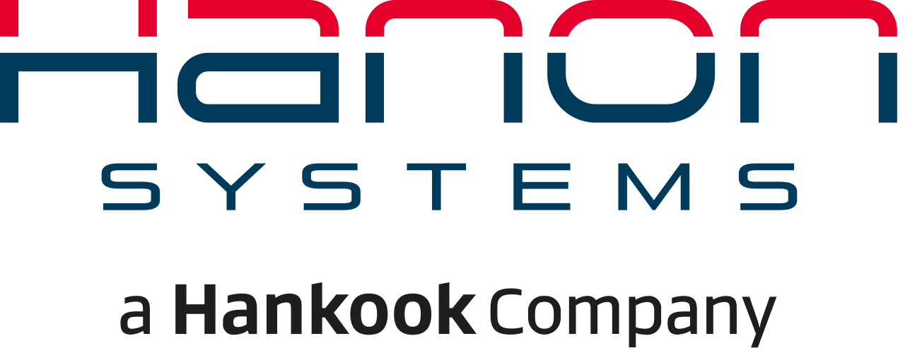
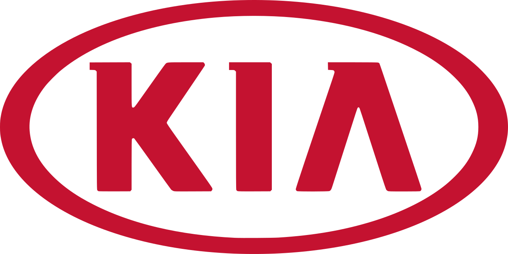
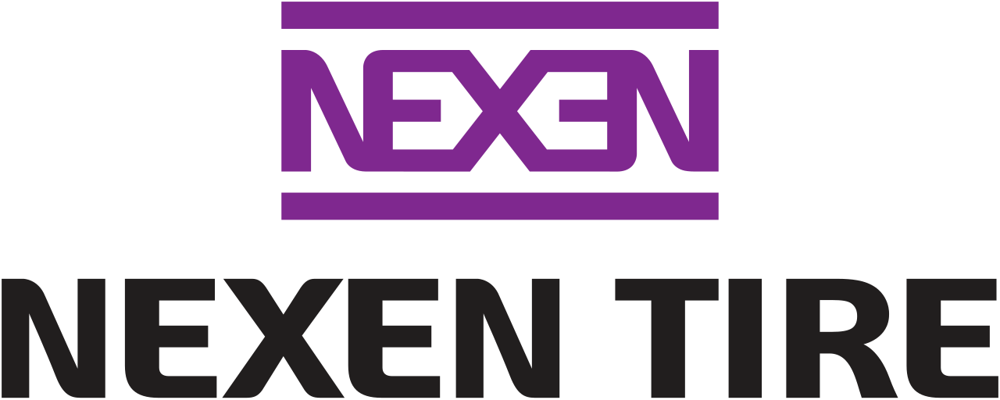
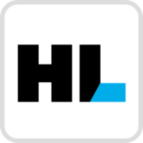

홈 > 브랜드 매거진 > 한국타이어
한국타이어
한국타이어(Hankook Tire & Technology)는 1941년 설립된 한국 최초이자 점유율 1위의 타이어 기업이다.
산업 분야 모빌리티 · 공개 등급 자료 기반 · 브랜드 평가 4.5 ★
한눈에 보는 브랜드
한국타이어(한국타이어앤테크놀로지)는 한국의 대표 타이어 제조 기업이다. 1941년 조선다이야공업으로 출발했고 2019년 현재의 사명으로 바꿨다.
브랜드 관점
효성에서 독립해 성장한 한국 대표 타이어 기업으로, 한온시스템 편입으로 열관리까지 사업을 넓혔다.
시작과 성장
1941년 조선다이야공업으로 설립됐다. 1968년 한국타이어로 이름을 바꿨고, 1980년대부터 조양래 주도로 효성에서 사실상 독립해 독자 성장했다.
브랜드 아이덴티티
대한민국 최초이자 시장점유율 1위의 타이어 기업으로 세계 6~7위권 규모이며, 글로벌 완성차에 신차용(OE) 타이어를 공급하는 한국 자동차 부품 산업의 대표 브랜드다.
제품과 서비스
승용·SUV·트럭버스용 타이어를 약 160개국에 판매한다. 2024년 한온시스템을 편입해 타이어와 열관리 사업을 함께 갖췄다.
사람들
현재 상태
글로벌 타이어 업계 7위권을 유지하며, 2025년 한온시스템 편입 효과로 연결 매출이 크게 늘었다.
타임라인
정리된 연도형 이벤트가 없습니다.
BI/CI 변천사
함께 읽을 브랜드

모빌리티 · 자료 기반한온시스템한온시스템(Hanon Systems)은 자동차 열관리(공조) 시스템을 제조하는 대한민국의 부품 기업이다.
 모빌리티 · 자료 기반현대자동차
모빌리티 · 자료 기반현대자동차현대자동차(Hyundai Motor)는 한국을 대표하는 자동차 기업으로, 인터브랜드 2025 베스트 코리아 브랜드 2위(브랜드 가치 약 27.9조 원)에 올랐다.

모빌리티 · 자료 기반기아기아(Kia)는 한국의 자동차 기업으로, 인터브랜드 2025 베스트 코리아 브랜드 3위(브랜드 가치 약 9.8조 원)에 올랐다.

모빌리티 · 자료 기반넥센타이어넥센타이어(Nexen Tire)는 넥센그룹 계열의 대한민국 타이어 제조 기업이다.

모빌리티 · 자료 기반HL만도HL만도(HL Mando)는 HL그룹 계열의 대한민국 자동차 부품(섀시·제동·조향) 제조 기업이다.
모빌리티 · 자료 기반KG모빌리티KG모빌리티(KG Mobility)는 KG그룹 산하의 대한민국 완성차 제조 기업으로, 옛 쌍용자동차다.
모빌리티 · 자료 기반쏘카쏘카(Socar)는 2011년 제주에서 시작한 한국 최대의 카셰어링 모빌리티 기업으로, 2022년 한국거래소에 상장했다.
모빌리티 · 자료 기반르노코리아르노코리아(Renault Korea)는 프랑스 르노그룹이 지배하는 대한민국의 완성차 제조 기업이다.